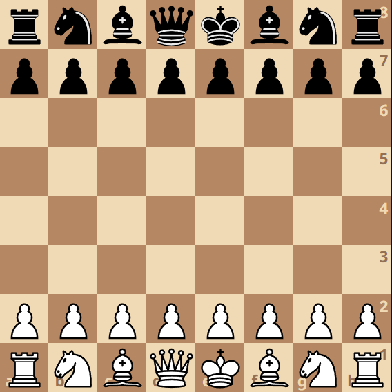
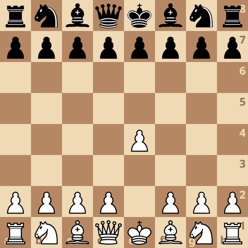

Debiuty szachowe
Otwarcia szachowe cechują się ogólnymi regułami, których nie zawsze trzeba przestrzegać, ale dla początkujących graczy są pomocne. Pierwszą zasadą jest walka o kontrolę centrum szachownicy, pionkami i innymi figurami. Ruchem który walczy o środek planszy już na początku gry jest chociażby 1. e4. Należy również zapewnić bezpieczeństwo królowi na przykład poprzez roszadę i rozwijać figury w sposób szybki i spójny. Debiuty można podzielić na otwarte, zaczynające się ruchami 1.e4 1.e5 i półotwarte 1.e4 inny ruch niż 1.e5 oraz zamknięte, w których białe zaczynają inaczej niż 1.e4. Poniżej znajdują sie przykładowe otwarcia szachowe.

Partia hiszpańska
Partia hiszpańska – otwarcie szachowe, które charakteryzuje się posunięciami: 1. e4 e5 2. Sf3 Sc6 3. Gb5. Partia hiszpańska jest debiutem otwartym. Jest to jedno z najwcześniej znanych otwarć. Otwarciem zajmowało się wielu wybitnych szachistów, między innymi mistrzowie świata: Aleksander Alechin, Wasilij Smysłow, Anatolij Karpow i Garri Kasparow.Obrona rosyjska
Obrona rosyjska (lub partia rosyjska) – debiut oznaczony kodami ECO C42 i C43, rozpoczynający się od posunięć: 1. e4 e5 2. Sf3 Sf6. Posunięcie 2...Sf6 znali już Pedro Damiano i Ruy López, jednak oceniali je jako słabe. Dopiero Carl Jänisch swoimi pracami teoretycznymi, a Aleksander Pietrow zastosowaniem praktycznym wykazali, że jest to otwarcie pełnowartościowe. Na ich cześć nazwano debiut obroną rosyjską. Dokładnej analizie poddał obronę także Steinitz, nietrafnie uznając między innymi posunięcie 3.d4 za najsilniejsze. W późniejszych latach obronę rosyjską chętnie grali Harry Pillsbury i Frank Marshall, należała ona także do arsenału Korcznoja, Karpowa i Kasparowa.
Obrona francuska
Obrona francuska – popularny debiut półotwarty, charakteryzujący się posunięciami 1. e4 e6. Jego podstawowa idea polega na zabezpieczeniu słabego pola f7 i przygotowaniu posunięcia d7-d5, przy jednoczesnym zapewnieniu rozwoju skrzydłu królewskiemu. Białe praktycznie nie są w stanie skutecznie zapobiec temu planowi, dlatego ich strategia polega na wykorzystaniu trudności z rozwinięciem hetmańskiego gońca czarnych ("francuski goniec") oraz zacieśnieniu pozycji czarnych ruchem e4-e5 i rozwinięciu aktywnych działań na skrzydle królewskim (włącznie z klasyczną ofiarą gońca). Ze swej strony czarne mają jasną kontrgrę c7-c5 a przy e4-e5 białych, także f7-f6, a ich szanse są większe na skrzydle hetmańskim.
Obrona Philidora
Obrona Philidora – debiut otwarty, oznaczony kodem ECO C41 i charakteryzujący się posunięciami: 1.e4 e5 2.Sf3 d6 Najczęściej wybieraną przez białe kontynuacją jest teraz 3.d4, na co czarne najczęściej wybierają kontynuacje 3...e:d4, 3...Sf6 i 3...Sd7.